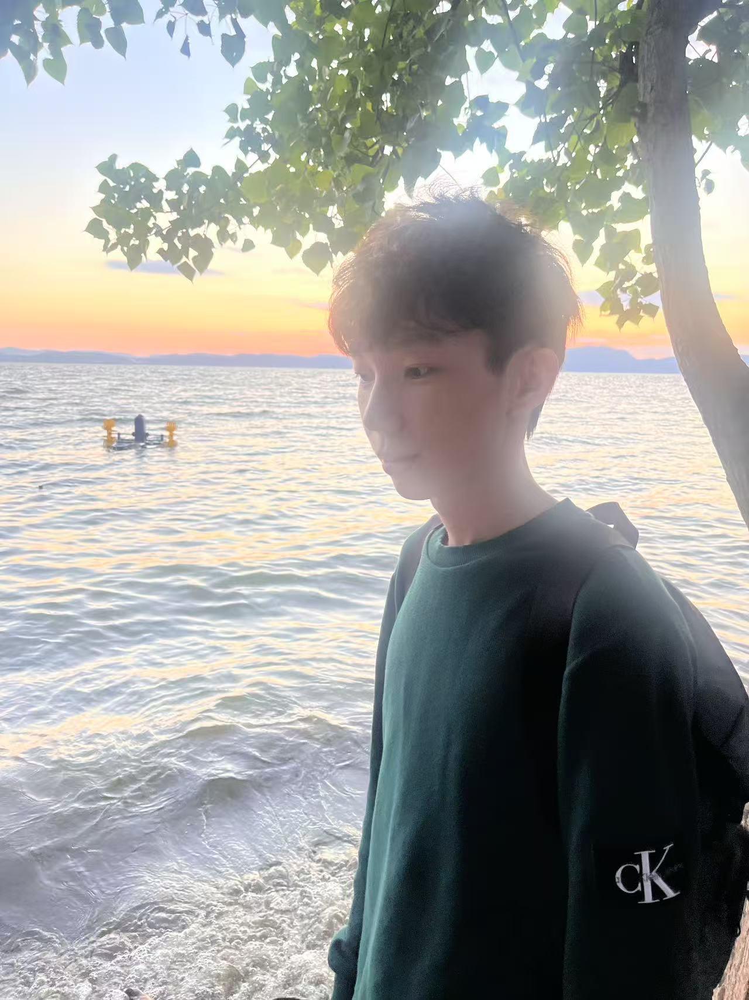

正在打磨
让现有体验站稳
人物走停与转身、骑乘手感、攀爬和水面细节；同时推进历史开场与书斋氛围。
我是胡哲瀚，毕业于乌普萨拉大学游戏设计专业。我用 Unity、Unreal 和 C++，把关卡、玩法和技术原型做成可玩的作品。
点开项目，看看玩法、
我的工作和改动过程。

我在乌普萨拉大学学习游戏设计，项目涵盖 Unity 关卡与玩法、Unreal 叙事解谜，以及 C++ 游戏 AI 和图形原型。我关心设计选择怎样变成玩家实际能理解、能操作的体验。
团队项目中，我编写交互逻辑、制作实体控制器输入，并为游戏创作音乐；个人技术项目中，我实现状态机、A* 寻路、地图读取和相机控制。目前希望寻找游戏设计、玩法开发与技术原型相关的机会。
不写代码的时候，我也为游戏创作音乐。
C++ · C# · Python
Unity · Unreal Engine · raylib
关卡设计 · 玩法开发
游戏 AI · 图形原型
THE DREAM OF DONGJING
在盛世中生活，在变局中选择。
一款从普通人视角展开的历史生活 RPG。以 1119 年汴京为起点，正在从场景与交互原型，走向可连续游玩的 Demo。
UE5.8 · C++ / Blueprint · Blender
玩家从普通人的生活开始：做买卖、逛酒肆、骑马、认识街坊。随着年份与局势变化，赋税、治安和战事也会进入日常生活。有人抓住机会，也有人被卷入困境。
我希望这个世界不预设简单的善恶。援助、妥协、告发或反抗，都有各自的处境和代价；玩家做过的选择，也会留在人物关系和这座城里。
从谋生、买卖和探索中，慢慢找到自己的位置。
交情、欠债和过往选择，影响熟人之后的回应。
繁华不会永远停在原地，个人生活与历史事件相遇。
下面是现有工程的开发画面，保留了灰盒、占位角色和动作测试的真实状态。点击图片可以放大。
建筑、庭院、植被与街巷的空间搭建，逐步从灰盒走向细化。
早期步行与交互测试：在实际尺度中检查道路、建筑和视线。
角色与马匹的动作测试；上下马、转向与动作衔接持续打磨。
禁军已放入城墙场景，继续完善站岗、巡逻和人物动作。
俯瞰早期汴京布局：主轴、街区、城墙与地标之间的关系。
汴京街巷、皇城、城墙与寺院区域已有场景基础，宋徽宗、禁军等人物已进入关卡。
已有步行、NPC 交互、骑马与上下马原型，持续调整动作、镜头和碰撞。
钱币账簿、交易和存档已有部分实现，正把分散功能串成连续的生活体验。
游戏构想、玩法规划与开发整合；结合 Blender 和 AI 辅助工具，持续制作、检查并迭代场景与角色。
人物走停与转身、骑乘手感、攀爬和水面细节；同时推进历史开场与书斋氛围。
创建与加入房间，共享时间、行动和经济状态。在一次税赋或军需事件中合作、选择，再看到 NPC 与关系的变化。
探索受约束的 AI NPC 对话、声望与司法、汴京至杭州的旅行，以及走向 1127 年的历史分支。
联机与长期构想中的系统属于后续目标，将随实际开发逐步更新。
把一座有轮廓的汴京，做成真正有人生活的世界。
回到项目开头游戏、图形，
或者一个还没被想出来的新点子。